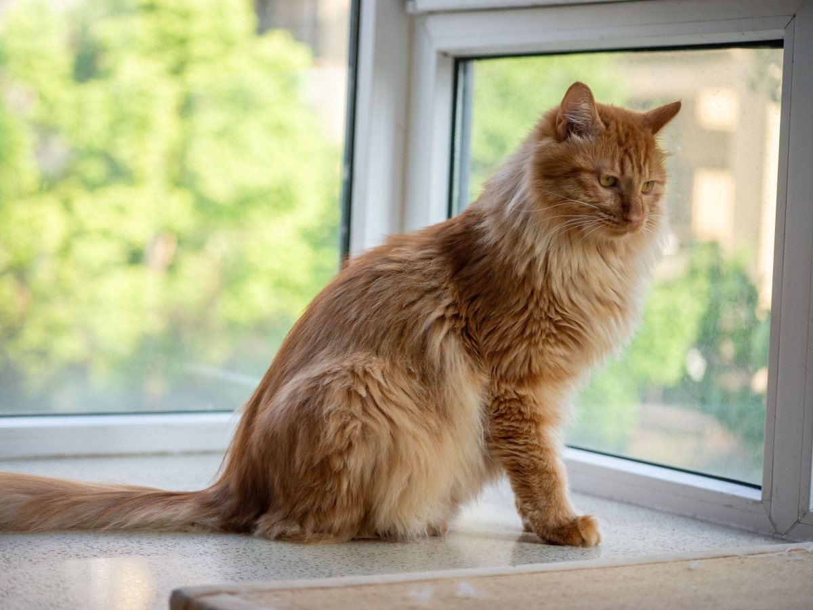
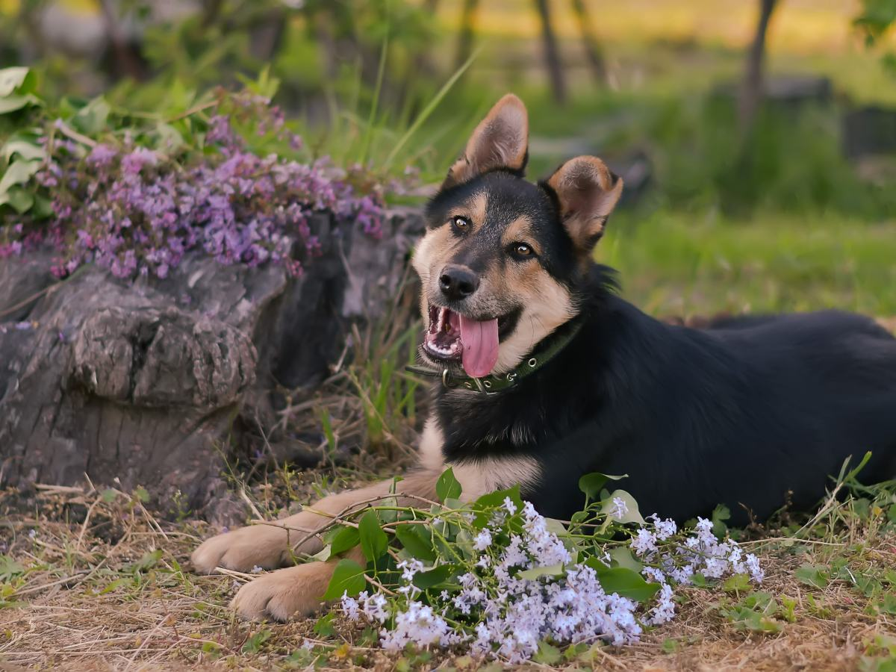
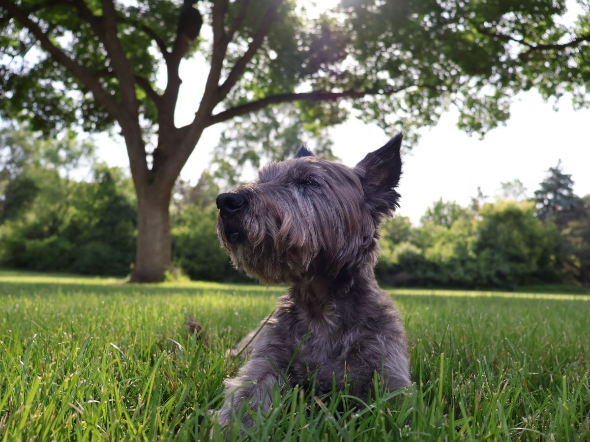
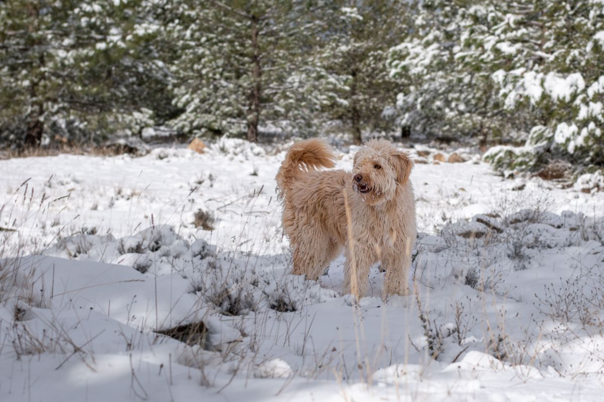
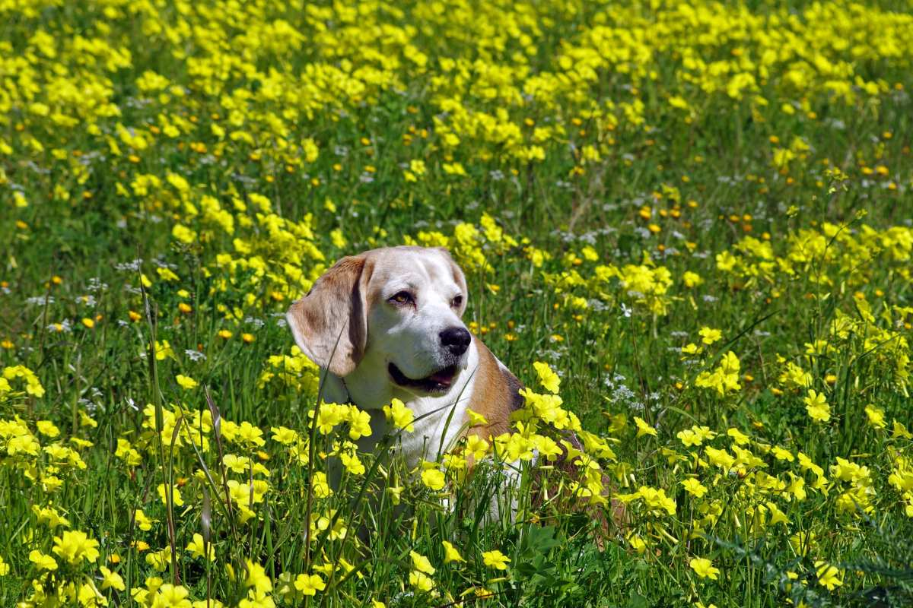

La Florida · Av. San José de la Estrella
Cada estación, otro cuidado.
Una veterinaria de barrio con 252 reseñas en La Florida.
- 252reseñas en Google
- 10años de actividad, o más
- 4estaciones, cuatro cuidados
- 1dominio con su nombre, hoy en venta por un tercero
El calendario de su mascota
¿Qué cuidar en cada estación?
Si nota algo de esto, pida hora sin esperar.
- VERANO
El calor
Paseos temprano y agua siempre.
- OTOÑO
Pulgas y garrapatas
Revise el pelo después de pasear.
- INVIERNO
El frío
Ojo con las articulaciones del mayor.
- PRIMAVERA
Alergias
Si se rasca o estornuda seguido.
El control de temporada lo indica la clínica.
El año cambia, y su mascota con él.
En San José de la Estrella
Lo que hay en Loren
-
Cada temporada
Control
Antes de que llegue el cambio.
-

Para empezar
Consulta
Perros y gatos.
-

Para prevenir
Vacunas
Y desparasitación.
-
Si se rasca
La piel
Picazón y alergias.
-

En La Florida
Diez años
Atendiendo al barrio.
-

Antes de ir
Por teléfono
(2) 2506 3187.
Los servicios los confirma la clínica.
252 reseñas en Google.
La Florida
Sol, hojas y nieve
Un año con su mascota


Fotos de referencia: ninguna es de la clínica.
Dónde estamos
San José de la Estrella, La Florida
- Dirección
- Av. San José de la Estrella 060
- Teléfono
- (2) 2506 3187
- Horario
- Desde las 10
- Comuna
- La Florida
Su ficha enlaza a veterinarialoren.cl, que hoy es de otra persona y está en venta.
San José de la Estrella, La Florida Abrir en Google Maps
Para el dueño
Qué es real y qué falta
Lo verificado
El teléfono, las 252 reseñas y que su dominio lo registró otra persona el 12-09-2026.
Lo de ejemplo
La guía por estación, los servicios y las fotos.
Lo que falta
La dirección exacta (dos guías no coinciden), el horario y un celular con WhatsApp.